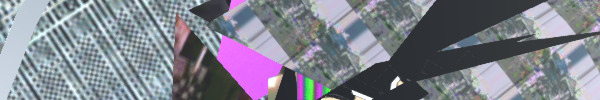

üëπ ARTSTUFF.WTF
Editor's Note: Please go swimming this weekend.

FRI 7/7
Jon Clark: The New Games Tournament Relics - Opening & Reception
Coaxial
8pm - 11pm
FREE
The New Games Tournament points to an unknown subculture full of pomp and circumstance. Its members gain prestige via an implied athletic or theatrical performance. In reality, the narrative details reside only in the observer’s individual interpretation of the installation. The rules of the games themselves are unknown, and only evoked via ambiguous objects and imagery (including the equipment needed to play, and the trophies designating success or failure); yet the world of the tournament slowly expands with hints at characters and storylines made possible by their intersection with these artifacts. This exhibition condenses the essence of The New Games Tournament onto white canvases, placing various items (hardware, suburban home and garden fixtures, game pieces, sports equipment) onto tableaus that form an ephemeral collection of notable “relics” from the fictional sport.
Action! Presents Mother's Day and Laps
Echo Park Film Center
8pm (door: 7:30pm)
FREE
Mother’s Day explores the impact of mass incarceration on a generation of youth through annual Mother’s Day charity bus rides that takes children from across California to visit their mothers in prison. Laps is a documentary on the San Quentin 1000 Mile Running Club, a group of inmates that run daily for themselves, and their annual marathon. This screening is part ACTION! Cinema as Sanctuary, a free summer series presenting political documentary films and workshops. ACTION! is made possible by support from The Academy of Motion Picture Arts and Sciences.
LINK
The Thanksgiving Play by Larissa FastHorse
Grand Performances
8pm
FREE
From award-winning playwright, director and choreographer Larissa FastHorse, this staged reading presents a satirical comedy about four people attempting to devise a politically correct play celebrating both Thanksgiving and Native American Month. The actors navigate a thicket of privilege, history and school district rules to share a better understanding of marginalized communities.
LINK

SAT 7/8
Analog Currency
The Mistake Room
6pm - 8pm
FREE
Analog Currency is set against the backdrop of dystopian realities that these technological changes of the Information Age have created in recent years. Conceived as an active platform in which multiple publics can engage critically with the present, Analog Currency is organized in two parts. The first is a group exhibition that brings together the work of a host of international artists including Sophia Al Maria, John Houck, Michael Mandiberg, Miguel Monroy, Pratchaya Phinthong, Tabita Rezaire, Jimena Sarno, Daniel Schwarz, and Martine Syms. The works included in the exhibition explore the re-materialization of the digital in conceptual and formal ways while interrogating the many structures that sustain it.
LINK

SUN 7/9
ACTION! PRESENTS COLLABORATION AND COCREATION IN DOCUMENTARY FILMMAKING
Echo Park Film Center
12noon - 5pm
FREE
This workshop is free and open to young filmmakers ages 19 – 35 with priority given to traditionally media-marginalized populations. Write us at info@echoparkfilmcenter.org for more info and sign up. Making documentaries surfaces power dynamics that can manifest and permeate documentaries in complex and unique ways. Documentary filmmakers are often aware of this dynamic and either accept it as is and move on, or leverage that awareness to push the documentary form. In this workshop, R.J. explores with workshop participants how filmmakers respond and navigate these dynamics and relationships to create challenging and compelling work.
LINK
Evening Of Balkan Song For Voice and Accordion
The Museum of Jurassic Technology
7:30pm & 9:30pm
$12 / $15
In their collaboration, Eva Salina & Peter Stan pick up and continue an interrupted legacy of empowered female voices in Balkan Romani (gypsy) music. Amplifying voices of past generations of Romani women musicians, Eva & Peter employ tenderness, grace, passion and a commitment to keeping these songs alive and evolving, while inspiring and teaching young people in the Balkans and the Balkan diaspora to continue to participate in living traditions.
LINK

ABOUT
ARTSTUFF.WTF is a minimal website listing page for selected mostly DIY art (and etc) events going on around Los Angeles. It is a personal list of 4 - 6 events sent out to friends weekly, and made available online here for bookmarking and quick reference. There is an archive of past listings. Sign up to receive weekly emails. Made by Lee Tusman.
